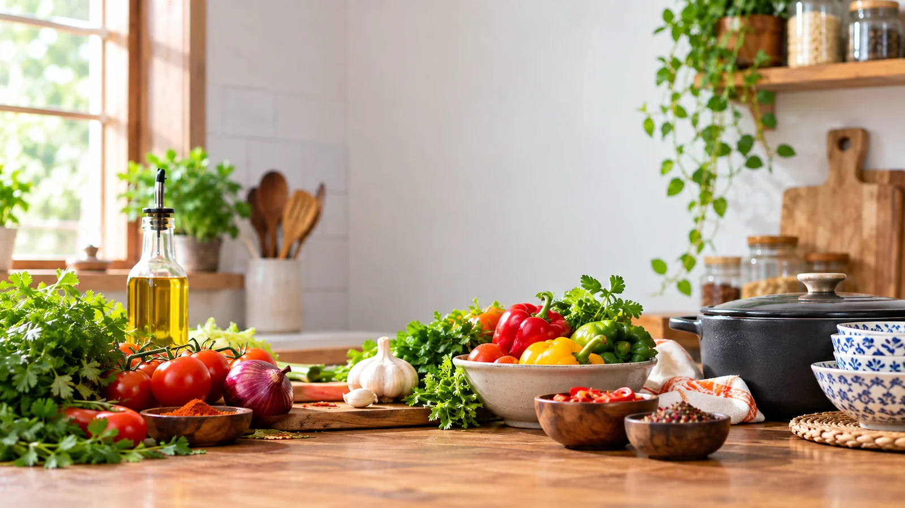

The kitchen behind the meals
About Miss
Wakey's Kitchen
Fresh Kenyan food, cooked with the feeling of home and made to reach you wherever the day takes you.
What we're about
Food that feels familiar.
Miss Wakey Kitchen is built around a simple idea: good food does not need to be complicated to be memorable.
We prepare Kenyan meals fresh in our kitchen, drawing from the everyday dishes people know, love and look forward to. There is pilau for the days you want something special, ugali and nyama for a proper meal, chapati when you want something comforting, and coastal-inspired dishes that bring another layer of flavour to the table.
We started with delivery, bringing freshly prepared meals to homes, offices and workplaces around Nairobi. The idea is still the same: cook properly, pack carefully and get the food to you while it is still warm.
What we serve
Kenyan food with a coastal touch.


Miss Wakey Kitchen
Proper food. No fuss.
Cooked fresh. Packed with care. Delivered warm.
Explore the menu